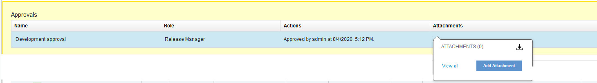
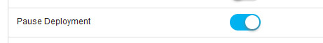

This article was originaly published in 2021.12.15
6.2.5.4
This release of IBM UrbanCode Release is a maintenance release and includes various bug fixes and enhancements. This release is recommended for all customers.
Apache Tomcat server upgraded
The Tomcat Server shipped with the product has been upgraded to version 8.5.69. Tomcat upgraded to resolve the following security vulnerabilities.
- CVE-2021-30639
- CVE-2021-30640
- CVE-2021-33037
Add attachment to approval
Attachments can be added to and downloaded from an approval.

Pause a deployment
You can pause a process and then resume it. This feature allows you to apply fixes between the pause and resume status without requesting a new process. To use this feature, requires that the new Pause Deployment feature flag is enabled.

Security enhancements
Upgraded to resolve security vulnerabilities related Whitesouce.